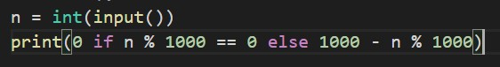
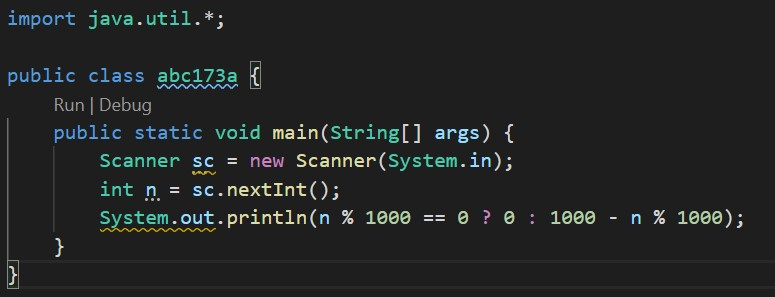
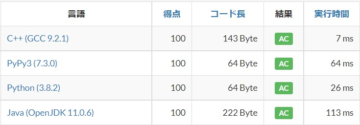

Javaはとても便利な言語です。
オブジェクト指向を採用しているため、アプリケーションなどの大規模な開発に向いています。
また「Java仮想マシン(JVM)」PCにインストールし、これを介して実行をするため、OSに依存しないという利点があります。(その代わり絶対に実行するPCにJavaをインストールする必要があるんですが...)
このような点が重宝され、リリースから20年以上経っている現在でも様々な場面で使用されています。
しかし個人的には、少なくともAtCoderなどの競技プログラミングにはJavaは向いていないのではないか、と思っています。
かくいう僕は競技プログラミングをJavaで半年ほどやり、その後使う言語をC++に変えました。もう今ではJavaに戻そうという気は1mmもありません。その理由を書いていきたいと思います。
1.実行速度が遅い
正直これが1番の理由です。JavaはC系言語よりもはるかに遅く、また多くの場合Pythonなどのいわゆる軽量プログラミング言語 (LL)よりも遅いです。
例として、ABC173のA問題をC++、Python(PyPy)、Javaで解いてみます。
この問題では、標準入力されたものを変数に代入する操作、それをもとに演算し画面に表示する操作が行われていて、 ループを含まないため定数時間で解くことができます。
以下が実際に提出したコードです。(順番にC++、Python(PyPy)、Java)


そして、これが実行時間です。
いやーーJava遅いなぁ。この問題ではどの言語でもACをとれているのですが、問題によっては公式の想定解法でTLEになってしまう事がそこそこ(特にABCのD問題くらいから)あります。
わざと実行時間について厳しい制約下でやりたい、という「呼吸法をトレーニングするためにわざと呼吸がしにくくなるマスクをつけているジョジョ2部のジョセフ・ジョースター」みたいな事がしたい人を除けば、 この遅さだけでもJava以外の言語で競プロを行う十分な理由になると思います。
あんまりたとえ話が面白くないですね。それでは次です。
2.書くことが多い/お作法がめんどくさい
先ほどの画像を見ればわかるように、Javaは他の言語に比べて書かなければいけないことが圧倒的に多いです。
例えば入力を受け取るとき、C++やPythonのようにすぐに受け取ることができず、1度Scannerクラスのインスタンスを生成する必要があります。
例えばnというint型の変数に入力された数値を代入する場合、各言語で次のような実装が一般的です。
C++ : std::cin >> n;
Python : n = int(input())
Java : Scanner sc = new Scanner(System.in); n = sc.nextInt();
めんどくさいですね。もちろんこれに関しては入力されたものを代入する関数を作れば解決するのですが、解決しない問題もあります。
それが、Javaはクラス名と関数名を省略できない、というところです。
public class Main {
public static void main(String[] args) {
んーー長い。さらにJavaはクラス名とファイル名(の拡張子以前の部分)を一致させなければいけないという決まりがあります。
さらに上画像のようにAtCoderではファイル名が何でも言いわけではなく、Main.拡張子で保存されるため、クラス名もMainにしなければいけません(もちろんファイル名も)。しかし当然ながら同じフォルダ内に同名のファイルを保存することはできないため、PCに保存するときは別のクラス/ファイル名で保存して提出するときにクラス名をMainに変える、という作業が必要になります。
「お作法が多いならマクロを組めばいいじゃないか！」と思った方がいるかもしれません。そういった方はおそらく普段CとかC++を使っているのだと思いますが、残念ながらJavaには#defineのように手軽に使えるマクロはありません。
3.文法がC++と似ているため、わざわざJavaを選ぶ必要がない
まとめると、Javaは軽量プログラミング言語でもないのに実行速度が遅いため、あまり競技プログラミングに適しているとは言えないと思います。
では、Javaから何に変えればいいのでしょう?
C++です。
文法はかなりJavaと近いため(JavaはCやC++を参考に作られているので当たり前といえば当たり前)、学習コスト自体はそこまで高くないはずです。
それに加え、AtCoderの解説のソースコードの多くがCやC++で書かれているため(最近はPythonも増えてるけど...)、解説がより理解しやすくなるという利点もあると思います。(僕は解説の文章を読んでもあまり理解できなかったけど、実装を見てああなるほどなと納得することが結構あります)
デメリットとメリットと称しておきながらデメリットしか紹介してないですね。スミマセン。もちろんJavaで競技プログラミングをやるメリットもたくさんあるはずです。
1.Javaのコードを書く練習になる
まあこれはJavaに限った話ではないのですが、競技プログラミングは新しく覚えた言語に慣れるために使うのにもかなり適していると考えています。
ただ、競技プログラミングで使う言語機能面での知識は全体として見ればかなりニッチだと思うので、あくまで「文法に慣れる」と考えたほうがいいかもしれないです。
2.エラー出力が丁寧
特にCやC++に比べてJavaはエラー出力が丁寧です。そのため、エラーメッセージを見ても間違い箇所がわからない、ということがCやC++に比べて少ないのかな、と思います。
随分と長くなってしまったのでそろそろ締めます。